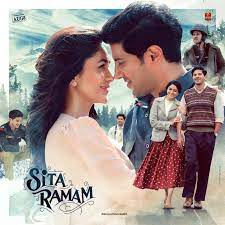

Movie Gallery

Usthad Hotel
Ustad Hotel is a 2012 Indian Malayalam-language drama film directed by Anwar Rasheed, written by Anjali Menon and produced by Listin Stephen.
Rating:9.5

Banglure Days
Bangalore Days is a 2014 Indian Malayalam-language coming of age romantic comedy-drama film written and directed by Anjali Menon
Rating:9
Kurup
Kurup is a 2021 Indian Malayalam-language biographical crime thriller film[3][4] based on fugitive Sukumara Kurup. Produced by Dulquer Salmaan .
Rating:9.75

Sitharamam
Sita Ramam is a 2022 Indian Telugu-language period romantic drama written and directed by Hanu Raghavapudi. Produced by Vyjayanthi Movies and Swapna Cinema.
Rating:8.5